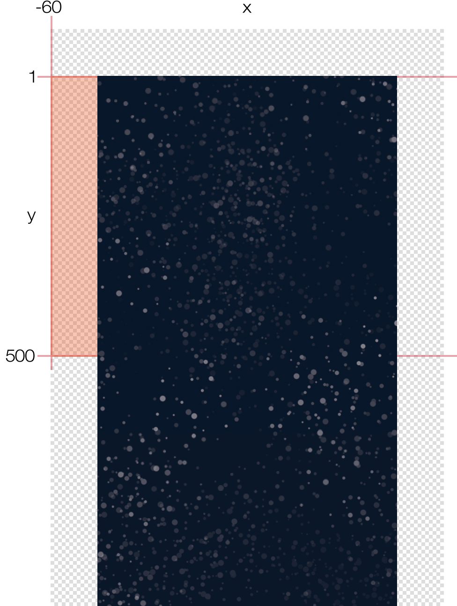
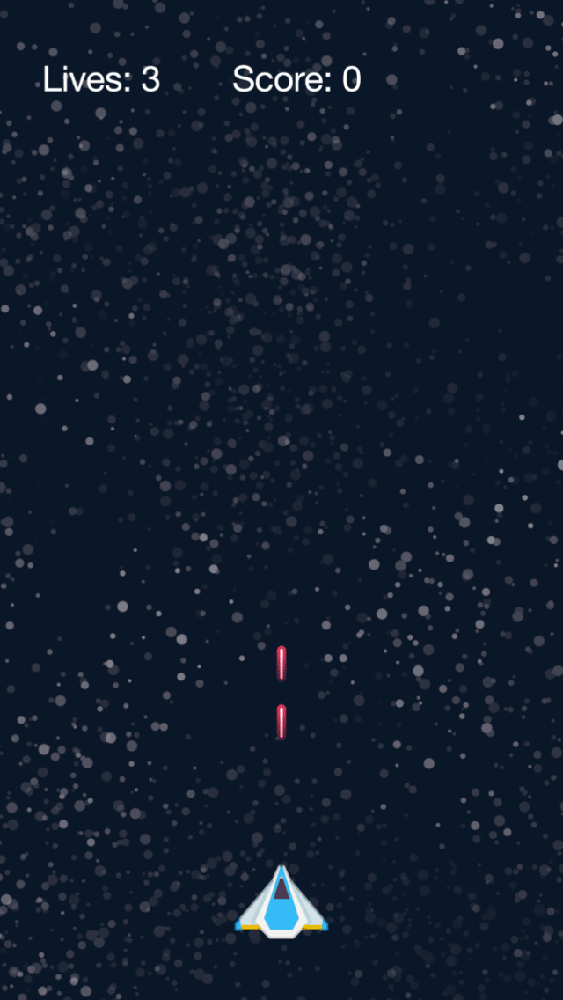
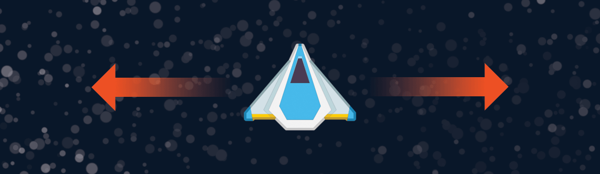

Chapter 3 — Bringing it to Life
Our project is beginning to take form, but it’s not yet a game. Let’s breathe some life into this baby!
Creating Asteroids

The creation of asteroids will be handled by a function. This function will be run (called) on a regular basis as part of our game loop, a function which is called on a repeating basis to handle various game functionality.
Like our previous functions, we begin with local functionend command:
local function updateText()
livesText.text = "Lives: " .. lives
scoreText.text = "Score: " .. score
end
local function createAsteroid()
end
Inside the function, we begin by creating a new instance of an asteroid named newAsteroid, prefaced with local as usual. The object itself is an image just like everything else we’ve created so far, taken from the same image sheet (objectSheet) that we loaded earlier:
local function createAsteroid()
local newAsteroid = display.newImageRect( mainGroup, objectSheet, 1, 102, 85 )
end
Since there will be a lot of asteroids on the screen at any given time, we need a way to keep track of them. As you recall from the previous chapter, we initialized several variables, among them the table named asteroidsTable. This table now comes into play as a place to store the new asteroid. To insert the new asteroid instance into the table, we can use the table.insert() command. This command just requires the name of the table (asteroidsTable) and the object/value to insert, in this case the newAsteroid object we just created:
local function createAsteroid()
local newAsteroid = display.newImageRect( mainGroup, objectSheet, 1, 102, 85 )
table.insert( asteroidsTable, newAsteroid )
end
With the asteroid image now loaded and placed into the table, we can add it to the physics engine:
local function createAsteroid()
local newAsteroid = display.newImageRect( mainGroup, objectSheet, 1, 102, 85 )
table.insert( asteroidsTable, newAsteroid )
physics.addBody( newAsteroid, "dynamic", { radius=40, bounce=0.8 } )
end
As with the ship object in the previous chapter, we’re taking a shortcut by adding a circular physics body (radius=40) to all asteroids, even though the asteroid image isn’t exactly circular. In time, you’ll learn how to add an accurate
Finally, let’s assign the asteroid a myName property of "asteroid". Later, when detecting collisions, it will simplify things to know that this object is an asteroid.
local function createAsteroid()
local newAsteroid = display.newImageRect( mainGroup, objectSheet, 1, 102, 85 )
table.insert( asteroidsTable, newAsteroid )
physics.addBody( newAsteroid, "dynamic", { radius=40, bounce=0.8 } )
newAsteroid.myName = "asteroid"
end
Placement
Now that we have a new asteroid on the screen, let’s set its point of origin. For our game, asteroids will come from the left, right, or top of the screen — it wouldn’t be fair to have an asteroid sneak up from behind!
Given three possible points of origin, we need Lua to generate a random integer between 1 and 3. This is easily done using the math.random() command with a sole parameter of 3:
local newAsteroid = display.newImageRect( mainGroup, objectSheet, 1, 102, 85 )
table.insert( asteroidsTable, newAsteroid )
physics.addBody( newAsteroid, "dynamic", { radius=40, bounce=0.8 } )
newAsteroid.myName = "asteroid"
local whereFrom = math.random( 3 )
end
Following this command, the local variable whereFrom will have a value of either 1, 2, or 3. Using this, we can implement a conditional if-then
local whereFrom = math.random( 3 )
if ( whereFrom == 1 ) then
end
end
Observe an important distinction about the Lua language: when you are assigning a value to a variable, you use a single equal sign (
=). However, if you are doing a comparison in a conditional statement, you must use two equal signs (==) to indicate that you are checking for equality instead of assigning a value.To tell Lua that you’re finished with a conditional structure, use the keyword
end.The parentheses around the comparison are optional, but many programmers use them for clarity or to build more complex
multi-condition statements.

Let’s use this first condition, whereFrom == 1,
if ( whereFrom == 1 ) then
-- From the left
newAsteroid.x = -60
newAsteroid.y = math.random( 500 )
end
end
Since this asteroid will come from the left side, we set its x property to -60. This should be a sufficient amount to ensure that not even a portion of the asteroid is visible to the player when it’s first created (it’s entirely off screen). As for the y property, we use math.random() once again to randomly select a value between 1 and 500, effectively making the asteroid appear somewhere between the top of the content area and about half the distance down — after all, we don’t want any asteroids coming from a place that makes it impossible to shoot them!
Movement
Now that we have the starting point, we need to tell the asteroid where it should move to. This time we’re going to use another physics command: object:setLinearVelocity(). This command is similar to the object:applyLinearImpulse() command which we used in the previous project, but instead of applying a sudden “push” to the object, it simply sets the object moving in a steady, consistent direction.
Add the highlighted line directly following the previous lines:
if ( whereFrom == 1 ) then
-- From the left
newAsteroid.x = -60
newAsteroid.y = math.random( 500 )
newAsteroid:setLinearVelocity( math.random( 40,120 ), math.random( 20,60 ) )
end
end
This might look complicated, but object:setLinearVelocity() simply requires two numbers indicating the velocity in the x and y directions respectively. The only twist we’re using here is math.random() to randomize the values so that each asteroid moves in a slightly different direction.
Notice that we call math.random() with two parameters this time, while before we called it with just one. When called with one parameter, the command randomly generates an integer between 1 and the value you indicate. When called with two parameters, the command randomly generates an integer between the two specified values, for example between 40 and 120 in the first instance above.
If we decided to call/run this function now, we might see an asteroid slowly moving across the screen from the left side, but probably not. Why? Because we haven’t added conditional cases for the other two sides of the screen! Remember, Lua is randomly choosing a number between 1 and 3, but currently we’re only handling the occurrence of 1, so there’s just ⅓ chance that our current code will generate an asteroid.
The following two conditions will complete the three possible sides from which asteroids can originate. When adding multiple conditions into the same if-thenelseif, not with if. Observe these additions:
if ( whereFrom == 1 ) then
-- From the left
newAsteroid.x = -60
newAsteroid.y = math.random( 500 )
newAsteroid:setLinearVelocity( math.random( 40,120 ), math.random( 20,60 ) )
elseif ( whereFrom == 2 ) then
-- From the top
newAsteroid.x = math.random( display.contentWidth )
newAsteroid.y = -60
newAsteroid:setLinearVelocity( math.random( -40,40 ), math.random( 40,120 ) )
elseif ( whereFrom == 3 ) then
-- From the right
newAsteroid.x = display.contentWidth + 60
newAsteroid.y = math.random( 500 )
newAsteroid:setLinearVelocity( math.random( -120,-40 ), math.random( 20,60 ) )
end
end
With these lines, all three conditions are properly accounted for. Now, when this function is called/run, an asteroid will randomly appear in one of the three specified regions and begin moving across the screen.
Rotation
Let’s wrap up the createAsteroid() function with an additional command for visual interest. To make the asteroids slowly rotate about their central point as they move through space, we can apply a random amount of torque (rotational force). Following the if-thenend statement), add the following highlighted command:
elseif ( whereFrom == 3 ) then
-- From the right
newAsteroid.x = display.contentWidth + 60
newAsteroid.y = math.random( 500 )
newAsteroid:setLinearVelocity( math.random( -120,-40 ), math.random( 20,60 ) )
end
newAsteroid:applyTorque( math.random( -6,6 ) )
end
Firing Mechanics

What is a shooting game without shooting?
Getting our ship to fire lasers is similar to loading asteroids, but this time we’ll use a convenient and powerful method to move them known as a transition. Essentially, a transition is an animation method which allows you to change the “state” of an object across a defined amount of time — this can include the position, scale, rotation, opacity, and more. You can even perform multiple transition effects in one line and specify an “easing” algorithm to make the transition run with
We’ll discuss transitions more in a bit. First, let’s add the function that will create a new laser object:
newAsteroid:applyTorque( math.random( -6,6 ) )
end
local function fireLaser()
local newLaser = display.newImageRect( mainGroup, objectSheet, 5, 14, 40 )
physics.addBody( newLaser, "dynamic", { isSensor=true } )
newLaser.isBullet = true
newLaser.myName = "laser"
end
Most of this code should be straightforward:
We create a new laser object inside the
mainGroupdisplay group, using5for the frame number since the laser is the 5th frame in our image sheet configuration.We add it to the physics engine as a sensor type object (
isSensor=true).We indicate that the laser should be treated as a “bullet” by setting its
isBulletproperty totrue. This makes the object subject to continuous collision detection rather than periodic collision detection at world time steps. Because our laser will be moving very quickly across the screen, this will help ensure that it doesn’t “pass through” any asteroids without registering a collision.Finally, we assign the object a
myNameproperty of"laser"which, similar to the ship and asteroids, will be useful when detecting collisions.
Placement
The new laser object is now loaded, but we haven’t yet positioned it correctly. In this case, we can’t use a static position because the ship will eventually be moving left and right via the player’s control. Fortunately, it’s very easy to position the new laser at the exact same place as the ship by setting its x and y values to the ship’s x and y values:
local function fireLaser()
local newLaser = display.newImageRect( mainGroup, objectSheet, 5, 14, 40 )
physics.addBody( newLaser, "dynamic", { isSensor=true } )
newLaser.isBullet = true
newLaser.myName = "laser"
newLaser.x = ship.x
newLaser.y = ship.y
end
This will correctly position the laser horizontally and vertically, but there’s one further issue to resolve. Because this function creates new lasers after the ship has already been loaded, and both objects are part of the mainGroup display group, lasers will appear visually above (in front of) the ship in terms of layering. Clearly this looks silly, so let’s push it behind the ship with the following highlighted command:
newLaser.x = ship.x
newLaser.y = ship.y
newLaser:toBack()
end
The object:toBack() command sends an object to the very back of its own display group, but that’s not necessarily the very back of the entire parent stage group. The above command will send the laser object to the back of its display group (mainGroup), but it will still appear in front of the background image contained within backGroup.
Movement
As mentioned earlier, we’ll move the laser up the screen using a transition. Most transitions are performed with the transition.to() command. In its most simple form, this command accepts an object reference, such as the laser, and a table of parameters to change over a specified time.
Add the following highlighted line to the fireLaser() function:
newLaser.x = ship.x
newLaser.y = ship.y
newLaser:toBack()
transition.to( newLaser, { y=-40, time=500, } )
end
As you can see, the first parameter is the object to transition (newLaser). For the second parameter, we include a table which can contain various properties for the transition. Here, we set y=-40 which indicates the laser’s vertical destination, slightly off the top edge of the screen. We also set a custom time parameter of 500. For transitions, the time (duration) should always be specified in milliseconds — remember that 1 second equals 1000 milliseconds, so this transition will occur over a duration of ½ second.
Cleanup
Great! New lasers will now correctly appear at the same location as the ship (visually behind it too) and move upward across the screen. There is just one last thing to implement, and it’s very important: cleanup. In any app, it’s critical that you remove objects from the game which are no longer needed. If you don’t, the app will eventually slow to a crawl, run out of memory, and crash — not a good experience for the player!
There are various approaches toward cleanup and it will depend on the situation. For the lasers, we’re going to use a very convenient method known as an onComplete callback. Available as an option within transition.to() and several other commands, this tells Solar2D that you want to call a function when something “completes.” This is ideal for removing lasers which have completed their transition, so let’s expand our transition.to() command to include an onComplete callback:
newLaser.x = ship.x
newLaser.y = ship.y
newLaser:toBack()
transition.to( newLaser, { y=-40, time=500,
onComplete = function() display.remove( newLaser ) end
} )
end
Simply stated, this addition runs a function when the transition completes. Inside the function, the only command we need is display.remove( newLaser ) which removes the laser object from the stage. Beyond that, Lua’s
Those with a keen eye will notice that the function specified after onComplete =onComplete callback, it’s easier to use an anonymous function in this case.
Tap Listener
We’re almost done with the firing mechanics — let’s finish up by assigning the ship a "tap" event listener so that the player can actually fire lasers. Immediately following the fireLaser() function (after its closing end statement), add the following command:
transition.to( newLaser, { y=-40, time=500,
onComplete = function() display.remove( newLaser ) end
} )
end
ship:addEventListener( "tap", fireLaser )
Let’s check the result of our code. Save your modified main.lua file, relaunch the Simulator, and try tapping/clicking on the ship to see how it fires lasers. Now we’re getting somewhere!
Moving the Ship
In this game, in addition to firing lasers, the player will be able to touch and drag the ship along the bottom of the screen. To handle this type of movement, we need a function to handle touch/drag events. Let’s create this function in the usual manner:
ship:addEventListener( "tap", fireLaser ) local function dragShip( event ) end
Notice that, unlike our previous functions, this function has the keyword event in the parentheses following its name. As you learned in the BalloonTap project, Solar2D is largely an
Specifically for this routine, the event parameter (table) tells us what object the user is touching/dragging, the location of the touch in content space, and a few other pieces of information. You’ll see this event parameter used frequently as you move forward and study existing code samples, so it’s a good idea to become familiar with it now.
Inside the function, to make things a little clearer, let’s set a local variable ship equal to event.target. In touch/tap events, event.target is the object which was touched/tapped, so setting this local variable as a reference to the ship object will save us some typing as we work through the function.
local function dragShip( event )
local ship = event.target
end
Touch Events
Touch events, distinct from tap events, have four distinct phases based on the state of the user’s touch:
"began"— indicates that a touch has started on the object (initial touch on the screen)."moved"— indicates that a touch position has moved on the object."ended"— indicates that a touch has ended on the object (touch lifted from the screen)."cancelled"— indicates that the system cancelled tracking of the touch (not to be confused with"ended").
For our convenience, let’s locally set the phase (event.phase) of the touch event:
local function dragShip( event )
local ship = event.target
local phase = event.phase
end
With the phase locally set, we can use an if-then"began" phase is dispatched to our function. In this conditional case, we set the touch focus on the ship — essentially, this means that the ship object will “own” the touch event throughout its duration. While focus is on the ship, no other objects in the game will detect events from this specific touch:
local function dragShip( event )
local ship = event.target
local phase = event.phase
if ( "began" == phase ) then
-- Set touch focus on the ship
display.currentStage:setFocus( ship )
end
end

Directly following this, let’s store the beginning “offset” position of the touch in relation to the ship. Conceptually, as illustrated here, a touch can occur in various places within an object’s bounds. In our code, event.x - ship.xevent.x) and the ship’s x position (ship.x). We set this as a property of the ship (touchOffsetX) for usage in the next phase.
if ( "began" == phase ) then
-- Set touch focus on the ship
display.currentStage:setFocus( ship )
-- Store initial offset position
ship.touchOffsetX = event.x - ship.x
end
end
For the "moved" phase touchOffsetX property comes into play. If we ignored this offset and simply set the ship’s x position to event.x, its center axis would skip/jump to the exact touch point on the screen and, as illustrated above, the touch point within the ship bounds may not be exactly at the center. Fortunately, factoring in the offset value will produce a smooth, consistent dragging effect.
if ( "began" == phase ) then
-- Set touch focus on the ship
display.currentStage:setFocus( ship )
-- Store initial offset position
ship.touchOffsetX = event.x - ship.x
elseif ( "moved" == phase ) then
-- Move the ship to the new touch position
ship.x = event.x - ship.touchOffsetX
end
end
For this game, ship movement will be restricted to just left and right, so we only handle changes along the x axis. If you create a game where an object can be dragged all around the screen, you should mimic this offset concept for the y axis as well. For example, in the "began" case, store the beginning y offset:
-- Store initial offset position ship.touchOffsetX = event.x - ship.x ship.touchOffsetY = event.y - ship.y
Then, in the "moved" phase, set the object’s y position:
-- Move the ship to the new touch position ship.x = event.x - ship.touchOffsetX ship.y = event.y - ship.touchOffsetY
The final conditional case includes both the "ended" and "cancelled" phases. The "ended" phase indicates that the user released touch on the object, while the "cancelled" phase indicates that the system cancelled/terminated the touch event. Typically, both of these phases can be handled in the same conditional block. For this game, we simply release the touch focus on the ship:
elseif ( "moved" == phase ) then
-- Move the ship to the new touch position
ship.x = event.x - ship.touchOffsetX
elseif ( "ended" == phase or "cancelled" == phase ) then
-- Release touch focus on the ship
display.currentStage:setFocus( nil )
end
end
Let’s complete the dragShip() touch listener function with one more command:
elseif ( "ended" == phase or "cancelled" == phase ) then
-- Release touch focus on the ship
display.currentStage:setFocus( nil )
end
return true -- Prevents touch propagation to underlying objects
end
As the comment indicates, this short but important command tells Solar2D that the touch event should “stop” on this object and not propagate to underlying objects. This is essential in more complex apps where you might have multiple overlapping objects with touch event detection. Adding return true
Touch Listener
We’re almost finished with the movement mechanics — let’s just assign the ship a "touch" event listener so that the player can touch/drag it left and right across the screen. Immediately following the dragShip() function (after its closing end statement), add the following command:
return true -- Prevents touch propagation to underlying objects end ship:addEventListener( "touch", dragShip )

Let’s check the result of our code. Save your modified main.lua file, relaunch the Simulator, and experiment with touching and dragging the ship around.
Game Loop
Many games include some type of game loop to handle the updating of information, checking/updating the state of game objects, etc. Although it’s entirely possible to build a game in Solar2D without ever implementing a game loop, we’ll use one here to illustrate the concept.
A game loop function is usually short — instead of containing a large amount of code itself, it typically calls other functions to handle specific repetitive functionality. Our game loop will be used to create new asteroids and clean up “dead” asteroids.
First, create the core game loop function in your main.lua file following the code you’ve already written:
ship:addEventListener( "touch", dragShip ) local function gameLoop() end
Now add the following lines to simply call the createAsteroid() function that we wrote earlier in this chapter. Effectively, each time the game loop iterates, it’ll generate a new asteroid.
local function gameLoop()
-- Create new asteroid
createAsteroid()
end
Asteroid Cleanup
For this game, let’s remove asteroids which have drifted off screen by looping through the asteroidsTable table. Remember when we declared this table as a place to store a reference for each asteroid? It may not have seemed relevant at the time, but now it’s coming fully into play!
To loop through the table, we’ll use a Lua for loop. Essentially, a for loop lets us use an index variable to count either up or down from a starting number to an ending number.
Add the following highlighted commands to your gameLoop() function:
local function gameLoop()
-- Create new asteroid
createAsteroid()
-- Remove asteroids which have drifted off screen
for i = #asteroidsTable, 1, -1 do
end
end
Notice that Lua for loops, similar to functions and conditional statements, conclude with the familiar end command.
In this case, we need to count down (decrement) starting from the number of asteroids in the asteroidsTable table, but there’s one slight catch: the amount will constantly change as new asteroids are created and others are destroyed by the player. Fortunately, Lua has a convenient way to count the number of elements in a table, accomplished by simply prefacing the table name with #:
#asteroidsTable
As you can see, we use this method in our for loop which takes the indicated form — basically, Lua uses the index i, starts at #asteroidsTable, 1-1
Inside the for loop, we must include code which should be processed each time the loop iterates. If there are ten asteroids in the table, the loop will iterate ten times. If there’s just one asteroid in the table, it will iterate once.
Add the following highlighted lines inside the for loop:
-- Remove asteroids which have drifted off screen
for i = #asteroidsTable, 1, -1 do
local thisAsteroid = asteroidsTable[i]
if ( thisAsteroid.x < -100 or
thisAsteroid.x > display.contentWidth + 100 or
thisAsteroid.y < -100 or
thisAsteroid.y > display.contentHeight + 100 )
then
display.remove( thisAsteroid )
table.remove( asteroidsTable, i )
end
end
end
Let’s examine these commands in more detail:
- For each iteration of the loop, we first declare a local reference to the asteroid which the loop is referencing on that particular iteration:
local thisAsteroid = asteroidsTable[i]
Essentially, thisAsteroid is set to the table item at the index number within the brackets ([]), so by using the for loop’s index of i, we easily gain a reference to each asteroid in the table as the loop iterates from start to finish.
- The next block is a
multi-conditional statement which checks the position of the asteroid being referenced during the loop iteration. Basically, with this statement, we check if the asteroid has drifted substantially far off any edge of the screen by checking itsxandyproperties:
if ( thisAsteroid.x < -100 or
thisAsteroid.x > display.contentWidth + 100 or
thisAsteroid.y < -100 or
thisAsteroid.y > display.contentHeight + 100 )
then
- If any of the four conditions are met, we perform two important actions:
First, we remove the asteroid from the screen using the display.remove() command:
display.remove( thisAsteroid )
Second, we remove the asteroid from the asteroidsTable table with the table.remove() command. This command simply removes an item from a table at the specified index, in this case the loop i
table.remove( asteroidsTable, i )
It’s very important to understand basic Lua memory management and how it relates to display objects. The first command above, display.remove( thisAsteroid )
Because we stored an additional reference to the asteroid inside the asteroidsTable table, Lua cannot free up the memory allocated to the asteroid object until that reference is removed. That’s why we perform the second command, table.remove( asteroidsTable, i )
That concludes our asteroid cleanup! Basically, on each iteration of the game loop, we use the for loop to check for asteroids which have drifted substantially outside of the screen bounds. Each of those “dead” asteroids is then removed from the screen and removed from the asteroidsTable storage table, keeping the total asteroid count down and memory usage low.
Loop Timer
Although you might imagine a game loop as code/functionality which updates on every frame of the application runtime — up to 60 times per second — that’s not necessarily true for every app. Because our game loop is a standard function, we have complete control over how often it runs, and when.
There are a couple different ways to run a game loop function repeatedly. In this game, we clearly don’t want to generate 60 new asteroids per second, and it’s not necessary to perform cleanup tasks that often either. So, we’ll implement a repeating timer instead.
Immediately following the gameLoop() function (after its closing end statement), add the following command:
display.remove( thisAsteroid )
table.remove( asteroidsTable, i )
end
end
end
gameLoopTimer = timer.performWithDelay( 500, gameLoop, 0 )
Let’s dissect this line:
First, we state that the
gameLoopTimerplaceholder variable (declared earlier) will be associated with our timer. This allows us to use that variable as a reference/handle for pausing or canceling the timer later, if necessary.Next, we call
timer.performWithDelay(). This convenient command tells Solar2D to perform some action after a specified number of milliseconds. Timers are useful for a wide array of game functionality, so get comfortable with them!Inside the parentheses, we start with the number of milliseconds to wait (delay) until the timer fires. Here we use
500which is exactly half a second, but you can experiment with other values. A lower number like250will make asteroids spawn faster and increase the difficulty of the game, but don’t set this value too low or asteroids will generate too quickly and crowd the screen.The next parameter is the function which will be called/run when the timer fires. Obviously we specify
gameLoophere.Finally, we include the optional iterations parameter with a value of
0. If this parameter is omitted, timers will simply fire once and stop. If you include this parameter, the timer will repeat for that number of iterations, but don’t be fooled by the0in this case — we are not telling the timer to“run zero times” but rather to repeat forever. Basically, passing0or-1will cause the timer to repeat indefinitely (unless we tell it to pause/stop).
All done! The game loop is complete and we have a timer in place to run it repeatedly and indefinitely. Save your modified main.lua file, relaunch the Simulator, and you should see new asteroids beginning to appear, steadily drifting and rotating across the screen. Our game is really coming to life now!
Collision Handling
Time to handle collisions! Initially, we’re only going to detect specific collisions:
- When a laser collides with an asteroid.
- When an asteroid collides with the ship.
Collisions are reported between pairs of objects, and they can be detected either locally on an object, using an object listener, or globally using a runtime listener. Different games require different methods, but here’s a general guideline:
Local collision handling is best utilized in a
one-to-many collision scenario, for example one player object which may collide with multiple enemies,power-ups , etc.Global collision handling is best utilized in a
many-to-many collision scenario, for example multiple hero characters which may collide with multiple enemies.
While this game has just one player object (the ship), it might seem that the best choice is local collision handling. However, the game will also need to detect collisions between multiple lasers and multiple asteroids, so global collision handling is a better option.
Restoring the Ship
Before we get into collision handling, we need a function that can be called to restore the ship following collision with an asteroid. In our game, we’ll mimic classic arcade games where, as the new ship fades into view, it’s temporarily invincible — after all, it wouldn’t be fair to allow players to die consecutive times without being given a chance to dodge incoming asteroids!
Following the code you’ve already written, add the following highlighted function:
gameLoopTimer = timer.performWithDelay( 500, gameLoop, 0 )
local function restoreShip()
ship.isBodyActive = false
ship.x = display.contentCenterX
ship.y = display.contentHeight - 100
-- Fade in the ship
transition.to( ship, { alpha=1, time=4000,
onComplete = function()
ship.isBodyActive = true
died = false
end
} )
end
Let’s examine the content of this function:
The first command,
ship.isBodyActive = falseThe next two lines simply reposition the ship at the
bottom-center of the screen.The final command might not make complete sense right now, but it will after we add “death” functionality further down. Essentially, this
transition.to()command fades the ship back to full opacity (alpha=1) over the span of four seconds. It also includes anonCompletecallback to an anonymous function. This function restores the ship as an active physical body and resets thediedvariable tofalse.
Collision Function
Next, let’s write the foundation of our collision function:
end
} )
end
local function onCollision( event )
if ( event.phase == "began" ) then
local obj1 = event.object1
local obj2 = event.object2
end
end
This is relatively simple and you should recognize some basic concepts from earlier:
Similar to touch events, collisions have distinct phases, in this case
"began"and"ended". The"began"collision phase is by far the most common phase you’ll need to handle, but there are instances where detecting the"ended"phase is important. Don’t worry too much about this now — here, we simply isolate the"began"phase by wrapping our functionality in a conditional clause.For simplicity throughout the function, we reference the two objects involved in the collision with the local variables
obj1andobj2. When detecting collisions with the global method, these objects are referenced byevent.object1andevent.object2.
Lasers and Asteroids
Let’s handle our first collision condition: lasers and asteroids. Remember how we assign a myName property to each object when we create it? This property now becomes critical as a means to detect which two object types are colliding. Here, the opening conditional clause checks the myName property of both obj1 and obj2. If these values are "laser" and "asteroid", we know which two object types collided and we can proceed with handling the outcome.
if ( event.phase == "began" ) then
local obj1 = event.object1
local obj2 = event.object2
if ( ( obj1.myName == "laser" and obj2.myName == "asteroid" ) or
( obj1.myName == "asteroid" and obj2.myName == "laser" ) )
then
end
end
end
When detecting collisions with the global method, there is no way to determine which is the “first” and “second” object involved in the collision. In other words, obj1 may be the laser and obj2 the asteroid, or they might be flipped around. This is why we build a
Inside the conditional clause, let’s begin by simply removing the two objects via display.remove(). While a fancy explosion effect would be awesome, this project merely exhibits how to handle collisions — how you expand on this later depends on your imagination!
if ( ( obj1.myName == "laser" and obj2.myName == "asteroid" ) or
( obj1.myName == "asteroid" and obj2.myName == "laser" ) )
then
-- Remove both the laser and asteroid
display.remove( obj1 )
display.remove( obj2 )
end
end
end
Next, let’s remove the destroyed asteroid from the asteroidsTable table so that the game loop doesn’t need to worry about it any further. For this task, we use another for loop which iterates through asteroidsTable, locates the instance of the asteroid, and removes it:
if ( ( obj1.myName == "laser" and obj2.myName == "asteroid" ) or
( obj1.myName == "asteroid" and obj2.myName == "laser" ) )
then
-- Remove both the laser and asteroid
display.remove( obj1 )
display.remove( obj2 )
for i = #asteroidsTable, 1, -1 do
if ( asteroidsTable[i] == obj1 or asteroidsTable[i] == obj2 ) then
table.remove( asteroidsTable, i )
break
end
end
end
end
end
In this loop, we also utilize a minor efficiency trick known as breaking, executed by the break command. Because we’re only looking for one specific asteroid, the loop can immediately break/stop once that asteroid has been removed, effectively stopping any further processing effort.
Finally, to reward the player for destroying an asteroid, we’ll increase the score variable by 100 and update the scoreText text object to reflect the new value:
if ( ( obj1.myName == "laser" and obj2.myName == "asteroid" ) or
( obj1.myName == "asteroid" and obj2.myName == "laser" ) )
then
-- Remove both the laser and asteroid
display.remove( obj1 )
display.remove( obj2 )
for i = #asteroidsTable, 1, -1 do
if ( asteroidsTable[i] == obj1 or asteroidsTable[i] == obj2 ) then
table.remove( asteroidsTable, i )
break
end
end
-- Increase score
score = score + 100
scoreText.text = "Score: " .. score
end
end
end
Asteroids and the Ship
Now let’s handle the second collision condition: asteroids and the ship. Add the following condition to the if-thenelseif because we’re adding another possible condition to the same statement:
-- Increase score
score = score + 100
scoreText.text = "Score: " .. score
elseif ( ( obj1.myName == "ship" and obj2.myName == "asteroid" ) or
( obj1.myName == "asteroid" and obj2.myName == "ship" ) )
then
end
end
end
Inside this conditional clause, let’s begin with an additional if-then
elseif ( ( obj1.myName == "ship" and obj2.myName == "asteroid" ) or
( obj1.myName == "asteroid" and obj2.myName == "ship" ) )
then
if ( died == false ) then
end
end
end
end
This conditional check might seem a little strange, but we need to confirm that the ship has not already been destroyed. As the game progresses, or with a faster asteroid spawning rate, it’s entirely possible that the ship will be struck by two asteroids almost simultaneously. Losing two lives in that case obviously isn’t fair, so we check the value of died and only proceed if it’s false.
Inside this if-thendied = true
elseif ( ( obj1.myName == "ship" and obj2.myName == "asteroid" ) or
( obj1.myName == "asteroid" and obj2.myName == "ship" ) )
then
if ( died == false ) then
died = true
end
end
end
end
Following this, we’ll subtract a life from the lives variable and update the livesText text object to reflect the new value:
elseif ( ( obj1.myName == "ship" and obj2.myName == "asteroid" ) or
( obj1.myName == "asteroid" and obj2.myName == "ship" ) )
then
if ( died == false ) then
died = true
-- Update lives
lives = lives - 1
livesText.text = "Lives: " .. lives
end
end
end
end
Finally, let’s include a conditional statement to check if the player is out of lives:
elseif ( ( obj1.myName == "ship" and obj2.myName == "asteroid" ) or
( obj1.myName == "asteroid" and obj2.myName == "ship" ) )
then
if ( died == false ) then
died = true
-- Update lives
lives = lives - 1
livesText.text = "Lives: " .. lives
if ( lives == 0 ) then
display.remove( ship )
else
ship.alpha = 0
timer.performWithDelay( 1000, restoreShip )
end
end
end
end
end
In the opening clause of this statement, if lives is equal to 0, we simply remove the ship entirely. This is the point where you could show a “game over” message or perform some other action, but for now we’ll leave the possibilities open.
In the default else clause (the player has at least one life remaining), we make the ship invisible by setting its alpha property to 0. This ties into the restoreShip() function which we wrote earlier where, when the ship fades back into view, the transition.to() command transitions the ship’s alpha back to 1. Immediately following that line, we actually call the restoreShip() function after a delay of one second — this yields a slight delay before the ship begins to fade back into view.
Collision Listener
All of our collision logic is now in place, but absolutely nothing will happen unless we link it up! Since we decided to implement collisions in the global method, it only takes one command to tell Solar2D that it should listen for new collisions during every runtime frame of the app.
Immediately following the onCollision() function (after its closing end statement), add the following command:
end
end
end
Runtime:addEventListener( "collision", onCollision )
This command is similar to previous event listeners where we added a "tap" or "touch" listener type to a specific object. Here, we simply add a "collision" listener type to the global Runtime object.
That’s it! Save your main.lua file, relaunch the Simulator, and your game will be finished — the player has full control over the ship, asteroids continue to spawn and move across the screen, score and lives are accounted for, and we basically have a fully functioning game!
Just in case you missed something, the complete program is available here. This project is slightly more complicated than the previous one, so it may be helpful to download the original source code to compare with what you’ve created.
Chapter Concepts
We’ve covered quite a few concepts in this chapter. Here’s an overview:
| Command/Property | Description |
|---|---|
| table.insert() | Inserts a given value into a table. |
| table.remove() | Removes an item from a table at the specified index. |
| math.random() | Returns a |
| object:setLinearVelocity() | Sets the x and y components for a body’s linear velocity. |
| object:applyTorque() | Applies rotational force to a physical body. |
| object.isBullet | Boolean for whether a body should be treated as a “bullet.” |
| object:toBack() | Moves a target object to the visual back of its parent group. |
| transition.to() | Animates (transitions) a display object using an optional easing algorithm. |
| display.remove() | Removes an object or group if not nil. |
| object:setFocus() | Sets a specific display object as the target for all future hit events "touch" and "tap") |
| timer.performWithDelay() | Calls a specified function after a delay. |
| object.isBodyActive | Sets or gets a physical body’s current active state. |